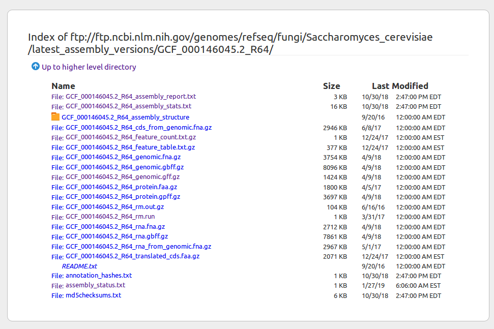
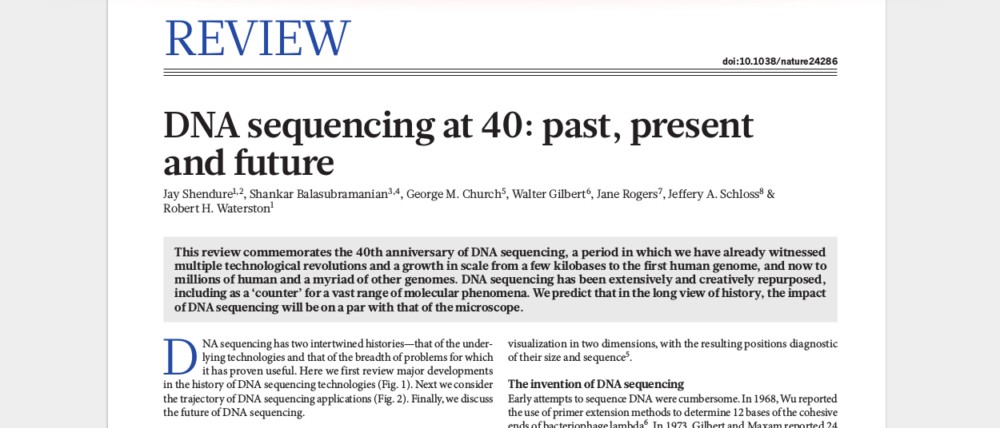

Principles and Applications of Modern DNA Sequencing
EEEB GU4055
Session 2: Intro to Genomics and Python
A general note on coding assignments
"I didn't really understand it, can I just move on without learning
the subject from this unit?"
No, most assignments will build on earlier lessons. If you do not
learn the basics now you will get lost later on.
Please attend office hours to seek help if you fall behind.

Notebook 1.1: bash-genomes
Notebook 1.1: bash-genomes
What is a reference genome? A fasta file.
>NC_001133.9 Saccharomyces cerevisiae S288C chromosome I, complete sequence
ccacaccacacccacacacccacacaccacaccacacaccacaccacacccacacacacacatCCTAACACTAC
ACAGCCCTAATCTAACCCTGGCCAACCTGTCTCTCAACTTACCCTCCATTACCCTGCCTCCACTCGTTACCCTG
TCAACCATACCACTCCGAACCACCATCCATCCCTCTACTTACTACCACTCACCCACCGTTACCCTCCAATTACC
CAACCCACTGCCACTTACCCTACCATTACCCTACCATCCACCATGACCTACTCACCATACTGTTCTTCTACCCA
TGAAACGCTAACAAATGATCGTAAATAACACACACGTGCTTACCCTACCACTTTATACCACCACCACATGCCAT
CCTCACTTGTATACTGATTTTACGTACGCACACGGATGCTACAGTATATACCATCTCAAACTTACCCTACTCTC
CACTTCACTCCATGGCCCATCTCTCACTGAATCAGTACCAAATGCACTCACATCATTATGCACGGCACTTGCCT
TCTATACCCTGTGCCATTTACCCATAACGCCCATCATTATCCACATTTTGATATCTATATCTCATTCGGCGGTc
attgtataaCTGCCCTTAATACATACGTTATACCACTTTTGCACCATATACTTACCACTCCATTTATATACACT
AATATTACAGAAAAATCCCCACAAAAATCacctaaacataaaaatattctacttttcaacaataataCATAAAC
GCTTGTGGTAGCAACACTATCATGGTATCACTAACGTAAAAGTTCCTCAATATTGCAATTTGCTTGAACGGATG
CAGAATATTTCGTACTTACACAGGCCATACATTAGAATAATATGTCACATCACTGTCGTAACACTCTTTATTCA
AATAATACGGTAGTGGCTCAAACTCATGCGGGTGCTATGATACAATTATATCTTATTTCCATTCCCATATGCTA
ATATCCTAAAAGCATAACTGATGCATCTTTAATCTTGTATGTGACACTACTCATACGAAGGGACTATATCTAGT
GATACTGTGATAGGTACGTTATTTAATAGGATCTATAACGAAATgtcaaataattttacgGTAATATAACTTAT
A genome fasta file
Read a compressed fasta file (e.g., a genome) and PIPE the output to view just a portion of it. The head command is extremely useful for "peeking" at large files. It's fast!
# pass the result of zcat to the program head
$ zcat genomes/virus.fna.gz | head -n 10
>NC_037667.1 Pandoravirus quercus, complete genome
CCGGTACAGTGAGCGGTTCACGGCCTGGCCACGGTCGACGGAGTGCCGTGCGATGCCATCGGCGACGGCCG
CGCGGGCATTCGCACGTGCGACCACAGCCGTCAGTGGTACTGGCGGGACGAGGCCGTCGGGGTGACGGACG
ACCTGCTCGATGCCATCACACGATGCGCCGAGTACGCGCACGATACCATCAGGGCGCCGTTGGCGAGCAAA
GAGATTATGGAGTTCAGCGTCCGTTGCACCCGCCAGGCGGCGGCCGGAGGCGACGACGTCACGGACCCCAT
GGACGCGAGGCCAGGCGCACGTGGCGCGCCTATCGCATGCACGCGCGCGTGTTCAGCGCCATCGCGTTGCT
ACCGCTGAGCATGATGGCGACGGCGGGTCTGCCCTTCTATGACGTGCGCCGGTACGCGCTGGTGGCGGCCC
GCCGCGCCGAACGCGCGTCGAGCCTGCTCCCAACACGCGTGCGACCAGACACCCTTGCGCACGAGGTGATG
GGCGATGGGCGTCTTCCGCGGCGCTCAATCGCGCACAGCCTCTTTGCAAGTTGGTTCGAACGCAATTACGC
CTACGAGGACGCCAGCGGCATCGACGCCGTGTGGTACGACCATCTCGGTCAAGAGGGCACCCACGAGACCG
The GFF file format (genome annotation)
We will revisit this file format in the next assignment; it introduces how genomic features are related (e.g., gene -> mRNA transcript -> exon -> CDS). For now, we are using it to practice reading and parsing a tab-delimited file.

Challenge
Return a tab-delimited table with the positions of all of the telomeres in the Yeast genome. Each line should have the following information: seqid, type, start, stop.
# read file | not lines start w/ # | fields 1,3,4,5 | only w/ 'telomere'
zcat genomes/yeast.gff.gz | \
grep -v "^#" | \
cut -f 1,3-5 | \
grep -w 'telomere'
NC_001133.9 telomere 1 801
NC_001133.9 telomere 229411 230218
NC_001134.8 telomere 1 6608
NC_001134.8 telomere 812379 813184
NC_001135.5 telomere 1 1098
NC_001135.5 telomere 315783 316620
NC_001136.10 telomere 1 904
NC_001136.10 telomere 1524625 1531933
NC_001137.3 telomere 1 6473
...
Notebook 1.2: Genome Databases
FTP allows you to access a file system through your browser.
The refseq/ directory contains genomes that are annotated,
meaning they contain files with information about where genes, and other
genomic features (e.g., telomeres) are located. While we of course
hope to learn what all of these features are, you don't need to know
yet. They are simply labeled things in the genome that are marked with
a start and stop position.
Link to FTP
Assigned reading
Assigned reading
Sanger sequencing technology
Illumina sequencing technology
Nanopore sequencing technology
Why Python?
Is it fast enough?
Why Python?
Easy to use, readable, extendable (e.g., C/C++ bindings), mature. Python is often the glue that binds programs/code/web.
Python tutorials
Python has been around for 20 years, and so there are many resources for
learning Python online. For extra help I recommend looking for *modern*
tutorials. That means tutorials that use IPython/jupyter, and which teach
Python3 as opposed to Python2.
The tutorials we have selected, and created, aim for modern Python use.
Getting started with Python
Learn by doing. Run the pre-written code in the assignment notebooks,
modify it, see how it changes, learn from it. *Try* to solve the
assigned problems on your own before you seek help.
Search for answers when you are stuck. If you get an error, type that
error into google to learn what it means. If you want to learn how to
create a list of list objects in python, google "python create a list
of lists"
Don't stress out. You can't learn programming all at once, it takes
time and *practice*. You'll pick it up through repetition, reading code,
and *trying* to solve problems with code. That is the purpose of our
exercises.
Interactive Python (it's here to help you)
Take advantage of the *interactive* nature of Python in jupyter. Use [tab]-completion to view attributes/functions of objects, and use shift+tab to view documentation notes for functions.

Assignment
Complete Unit 2 on Codio: 4 notebooks.
Read chapters 1,3,4,5,6,7 of The official Python tutorial